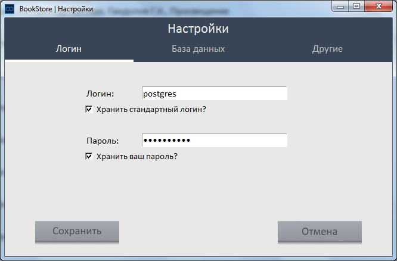
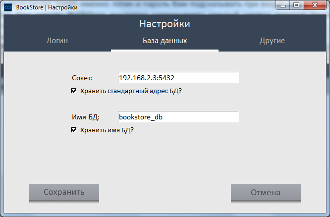
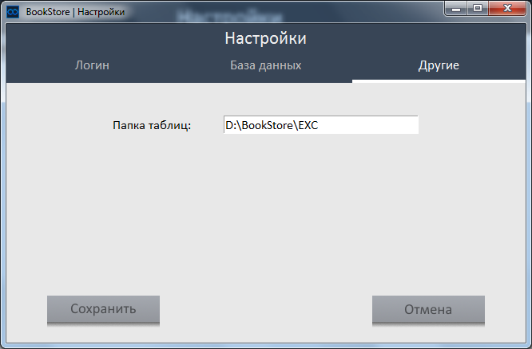

С помощью инструмента «Настройки» Вы можете настроить некоторые детали BookStore.
Чтобы начать настройку, воспользуйтесь данным инструментом на перовой странице BookStore (страница основных действий). Вам
вылетит окно.

В этом окне есть три страницы, по которым Вы можете перемещаться, используя
вкладки наверху окна. Чтобы перейти на страницу с настройками логина, нажмите
вкладку «Логин», чтобы перейти на страницу с настройками БД, нажмите «База данных»,
чтобы перейти на страницу с другими настройками, нажмите на вкладку «Другие».
На каждой странице Вы можете что-то вписывать, ставить галочки и пр. Чтобы сохранить
изменения на какой-либо странице, нажмите на кнопку, находящуюся внизу каждой
странице настроек с надписями «Сохранить настройки логина», «Сохранить настройки
БД» и «Сохранить другие настройки» соответственно для страниц «Логин», «База
данных» и «Другие».
Рассмотрим первые две страницы «Логин» и «База данных». Данные страницы настроек
необходимы для настраивания входа в BookStore (сюда ссылку на статью про вход). С
помощью этих настроек Вы можете указать BookStore, подсказывать ли Вам Ваши данные
входа при включении BookStore, и если подсказывать, то что именно.
Разберем первую страницу «Логин».
Здесь Вы можете поставить галочки, хранить ли Ваши имя пользователя (логин) и пароль
для входа в систему. Если Вы поставите там галочки, то Вы сможете ввести в поля ввода,
какие именно логин и пароль Вам подсказывать при входе, чтобы BookStore их запомнил.
Чтобы никто не смог подглядеть Ваш пароль, BookStore аккуратно «замазывает» каждый
символ значком точки. Чтобы сохранить изменения настроек на данной странице,
нажмите на кнопку внизу.
Далее разберем вторую страницу «База данных».

Здесь Вы также можете указать, какие данные сервера БД BookStore Вы хотели бы, чтобы
BookStore подсказывал Вам при входе. Для того чтобы указать, хранить ли (и позже
подсказывать при входе) сокет и имя БД, поставьте галочку рядом с тем, что Вы хотите
изменить, и введи нужные данные в поле ввода. Для того чтобы сохранить изменения на
этой странице также не забудьте нажать кнопку внизу.
Теперь разберем третью страницу «Другие».

Здесь Вы можете указать BookStore, в какую папку скидывать Вам Ваши файлы отчетов в
формате таблиц MS Excel. Чтобы изменения настроек на этой страницу опять же не
забудьте нажать кнопку внизу.